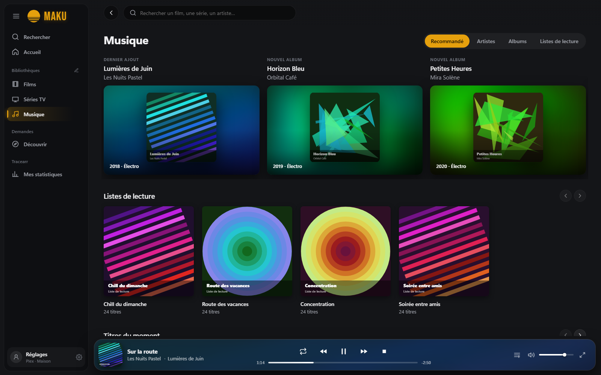
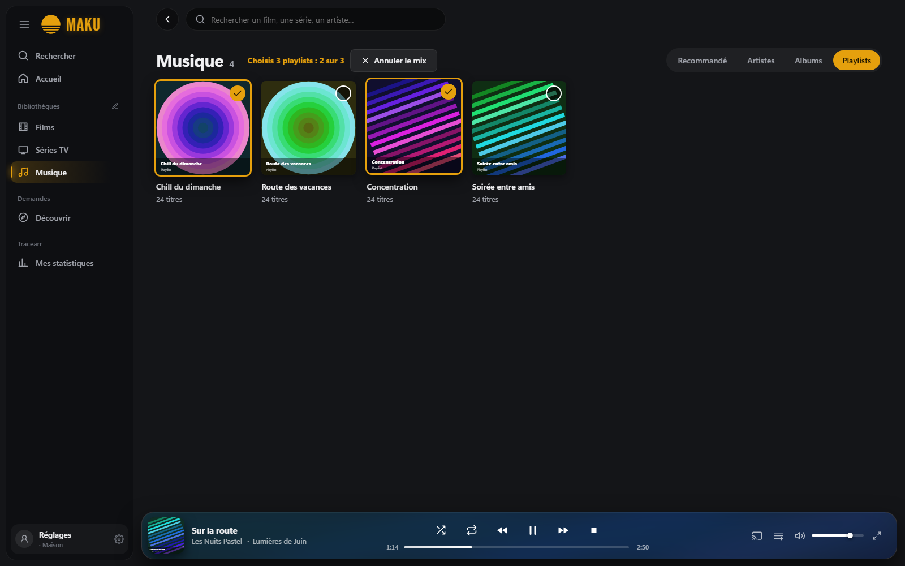
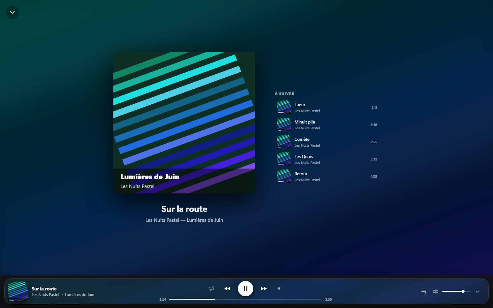

Accueil › Fonctionnalités › La musique
La musique
Votre musique a enfin sa vraie application.
Votre serveur garde peut-être des milliers d'albums. Maku les présente comme une application de musique moderne : grandes pochettes, playlists à portée de main, paroles qui défilent avec la voix, et des morceaux qui s'enchaînent sans le moindre blanc.

L'accueil musique
Tout ce que vous écoutez, en un coup d'œil
De grands panneaux pour les derniers albums ajoutés, vos playlists avec la dernière écoutée en premier, et les Titres du moment. Les pochettes grandissent avec la fenêtre : sur un grand écran, elles prennent toute la place qu'elles méritent.
- Des onglets pour tout parcourir : Artistes, Albums et Playlists.
- Une barre de lecture flottante en verre dépoli, teintée par la pochette en cours, reste en bas pendant que vous naviguez.
- Chaque titre se note de 1 à 5 étoiles et a son menu : lire ensuite, ajouter à la file d'attente ou à une playlist, aller à l'artiste ou à l'album, voir les informations du fichier (format, débit, échantillonnage).

Playlists et Mix of Three
Trois playlists, un seul mix
Dans l'onglet Playlists, Écouter tout mélange toutes vos playlists d'un coup. Et quand vous hésitez entre plusieurs ambiances, Mix of Three vous laisse en choisir trois : Maku les mélange le temps d'une écoute.
- Trois touches suffisent : cochez trois playlists, le mix démarre aussitôt, en ordre aléatoire.
- Pas de doublon : un titre présent dans deux playlists ne passe qu'une fois.
- Il vous attend : le mix reste en tête des playlists de l'accueil musique pendant deux jours après sa dernière écoute. Sa pochette ouvre la liste de ses titres, ▶ le relance.
- Il ne s'impose pas : ce n'est pas une playlist du serveur. Il disparaît de lui-même, ou tout de suite avec Oublier ce mix.

En cours de lecture
Les paroles, au rythme de la voix
La vue En cours de lecture prend les couleurs de la pochette, jusque derrière le menu. À côté, les paroles synchronisées défilent : la ligne chantée ressort, et un clic sur une ligne y saute.
- La file d'attente se réordonne en maintenant un titre puis en le glissant.
- Aléatoire mélange la suite de la file, un second appui la remet dans l'ordre.
- Répéter répète la file, puis le titre en cours, puis plus rien.
- Les paroles viennent de lrclib.net, un service gratuit, et se désactivent dans les Réglages si vous préférez.

Découvrir et enchaîner
Une radio pour chaque artiste, sans un blanc
Sur la fiche d'un artiste, Radio mêle ses titres à ceux d'artistes proches, choisis par votre serveur. De quoi redécouvrir votre propre bibliothèque.
- Sans blanc : le morceau suivant se charge pendant la fin du précédent. Un album live s'écoute d'une traite, comme il a été pensé.
- Vos écoutes remontent dans l'historique du serveur, et dans vos statistiques.
- Sur téléphone et tablette Android, un album ou une playlist se télécharge pour l'écouter sans réseau.

Partout où vous êtes
Du salon à la voiture
La même musique, la même file d'attente, sur tous vos écrans et vos enceintes.
Sur vos enceintes
Écouter sur envoie la musique vers une enceinte ou un téléviseur Chromecast du réseau. L'appareil lit lui-même la file : Maku la pilote, et peut même être fermé. Sur iPad et iPhone, le bouton ouvre AirPlay ; sur Mac, le son suit la sortie choisie dans macOS.
Sur le téléphone
La musique continue quand Maku est quitté, avec une notification qui la pilote depuis l'écran de verrouillage et les boutons d'un casque Bluetooth. Un mini-lecteur flotte en bas de l'écran et s'ouvre en plein écran, avec les paroles ou la suite de la file.
Dans la voiture
Maku apparaît parmi les applications de musique d'Android Auto, avec quatre onglets : Accueil, Artistes, Albums et Playlists. « Joue … sur Maku » lance un artiste, un album ou un morceau à la voix, et la voiture lit la musique même si Maku n'est pas ouvert sur le téléphone (avec Plex).
Sur la télé
Un lecteur plein écran, pochette en grand, file d'attente en rangée de pochettes et paroles à côté. Pendant que vous parcourez les films, un petit lecteur en bas à droite montre le titre en cours ; la télécommande y entre pour mettre en pause, passer au suivant ou tout arrêter.